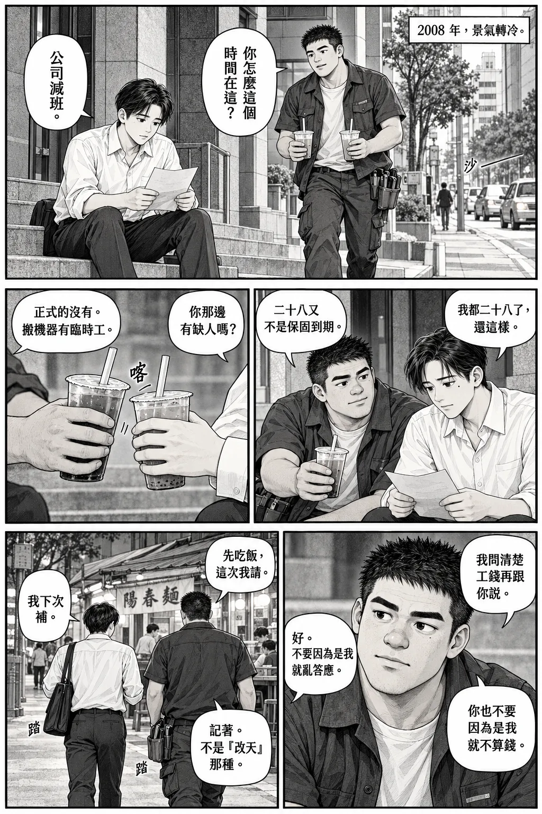
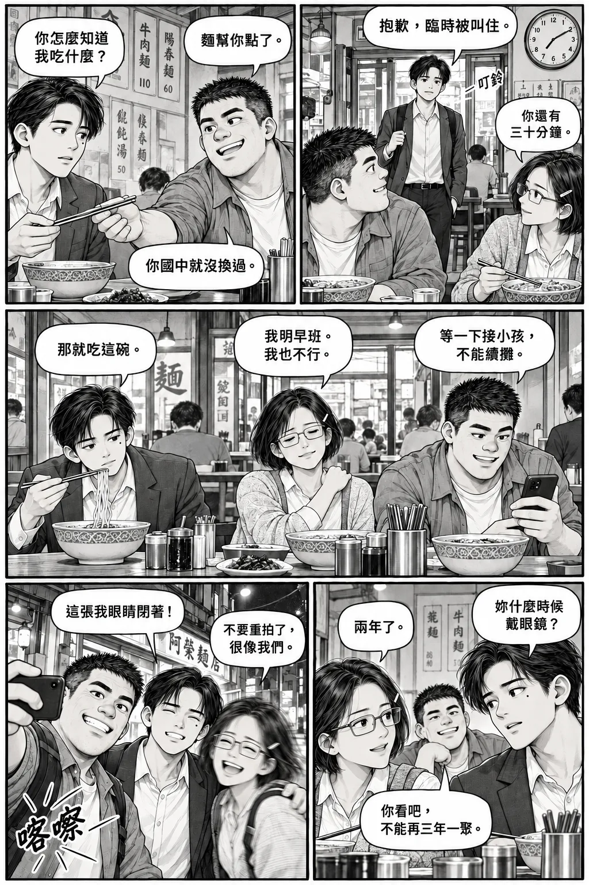
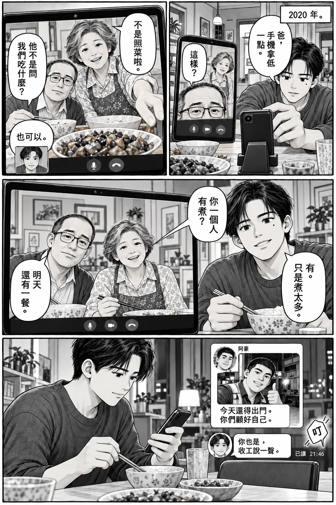
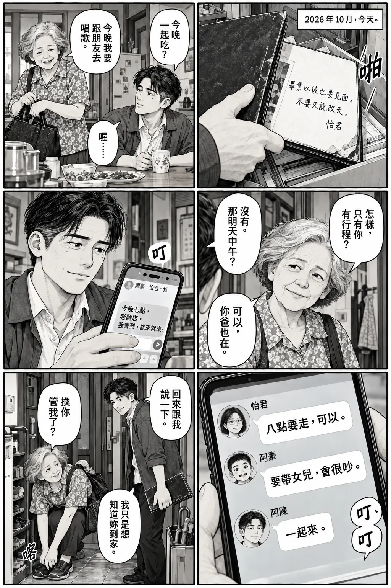
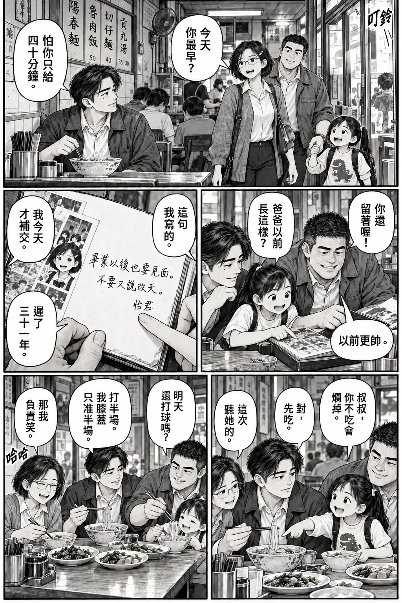
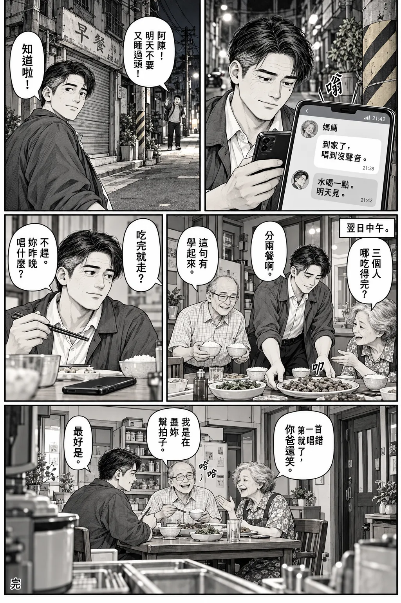

黑白生活漫畫 · 16 頁 · 85 格 · 短篇完結
我們這一屆，1980
今天就吃飯。
從等卡通，
到等爸媽回電話。
從右到左，從上到下。
對話就在漫畫格內。點圖片可開啟原尺寸，放大慢慢看。
十六頁，把「改天」說成今天。目錄
第 01 頁 · 5 格
那句話還在（2026 年 10 月，46 歲）

分鏡與對白文字版
- 第 1 格
近景、俯拍。 阿陳蹲在老家櫃子前，從文件下抽出磨角紀念冊；手機擱在箱邊。時間框：「2026 年 10 月，老家。」媽媽在格外問：「那箱還要不要？」阿陳：「等一下，我找到了。」音效：沙。
- 第 2 格
手部特寫。 冊頁攤開，清楚露出少女筆跡「畢業以後也要見面。不要又說改天。怡君」。阿陳拇指停在那行字旁。阿陳小氣泡：「我有這麼常說嗎？」音效：無。
- 第 3 格
手機特寫。 三人群組最後幾則是「改天吃」「這週不行」「再約」。最新日期相隔很久，不鋪滿細字。阿陳手指懸在輸入列。音效：無。
- 第 4 格
中景。 媽媽從左側門框探頭，阿陳在右側地上。媽媽：「你上次回來也說下次吃飯。」阿陳：「我今天不是回來了？」媽媽：「你說拿完東西就走。」音效：無。
- 第 5 格
通欄、阿陳側臉與窗外巷口。 他沒接話；窗外小孩抬頭大喊。小孩：「阿豪叔叔！下來啦！」阿陳回頭。音效：噠噠噠。
第 02 頁 · 6 格
再五分鐘（1987 年秋，7 歲）

分鏡與對白文字版
- 第 1 格
巷子全景。 同角度接前頁窗戶，變回舊街景。小阿豪雙手圈嘴，阿陳在樓上窗口。時間框：「1987 年秋。」阿豪：「阿陳！下來啦！」阿陳：「來了！」音效：無。
- 第 2 格
低角度中景。 兩人蹲著打彈珠，阿陳瞇一眼瞄準；阿豪手指劃線。阿豪：「不能超過這裡喔。」阿陳：「你剛剛就有！」音效：無。
- 第 3 格
地面特寫。 阿陳彈出的珠撞中阿豪的珠，兩顆向左滾。阿陳：「中了！」音效：叩！
- 第 4 格
雙人近景。 阿豪伸手撿珠又停住，故意板臉。阿豪：「再一局。」阿陳：「你剛說最後一局。」阿豪：「這次才是真的。」音效：無。
- 第 5 格
中景、由巷口看向家門。 媽媽站在門邊，兩人仍蹲在右前景。媽媽：「阿陳，吃飯！」阿陳：「再五分鐘！」媽媽：「卡通快開始了。」音效：無。
- 第 6 格
動作中景。 阿陳抱珠急起身，阿豪還蹲著伸手。阿豪：「欸！我的那顆！」阿陳回頭：「明天還你！」音效：踏踏踏。
第 03 頁 · 5 格
誰可以按暫停（1990 年，10 歲）

分鏡與對白文字版
- 第 1 格
客廳全景。 阿豪家，兩人靠近映像管電視打紅白機，怡君坐旁邊看。時間框：「1990 年，放學後。」阿豪握手把：「這關過了就換你。」怡君：「你上關也這樣說。」音效：嗶、嗶。
- 第 2 格
阿陳近景。 他把考卷折小，想塞進書包。怡君看見角落的紅字。怡君：「還沒簽？」阿陳：「你不要那麼大聲。」音效：沙。
- 第 3 格
三人中景。 怡君伸手指向電視，阿豪轉頭分心。怡君：「阿豪，後面！」阿豪：「哪裡？」阿陳：「你先看畫面！」音效：噗。畫面只呈現原創簡單遊戲圖樣。
- 第 4 格
反應近景。 阿豪失敗，垮肩把手把交出；阿陳因剛才吵鬧笑出來。阿豪：「換你。這台今天不聽話。」怡君：「它又不用簽考卷。」音效：無。
- 第 5 格
家中餐桌雙人中景。 同晚，阿陳終於把攤平考卷推給媽媽。媽媽先看他，再拿筆。阿陳：「我怕你生氣。」媽媽：「我有生氣。你藏了三天。」媽媽第二泡：「先說，哪一題不會？」音效：喀（筆帽）。
第 04 頁 · 6 格
別替我選（1995 年夏，15 歲）

分鏡與對白文字版
- 第 1 格
球場全景。 阿陳投球、阿豪在籃下，怡君帶著畢業冊坐場邊。時間框：「1995 年，國中畢業前。」阿豪：「聯考完再天天打！」阿陳：「你不念高中喔？」音效：砰。
- 第 2 格
中近景。 阿豪接住落地球，抬頭正視阿陳。阿豪：「我要念高職，學冷凍空調。」阿陳：「我是想說，我們可以同校……」音效：無。
- 第 3 格
怡君近景。 她把冊子合上，插話。怡君：「同校又不是只有一種走法。」怡君第二泡：「我也還在選。」音效：啪。
- 第 4 格
雙人中景。 阿陳張嘴欲說又停，阿豪把球輕拋給他。阿陳：「好。那你以後修我家的？」阿豪：「先收訂金。」音效：咚。
- 第 5 格
三人近景。 怡君攤手伸向阿豪，阿陳抱球笑。怡君：「那我的呢？」阿豪：「妳幫我補英文，算半價。」怡君：「原來你也知道要考英文。」音效：無。
- 第 6 格
球場外遠景。 三人並排走向岔路；怡君拿出紀念冊遞給阿陳。怡君：「明天還我，要寫字。」阿陳：「寫什麼？」怡君：「不要只有『鵬程萬里』。」音效：沙。
第 05 頁 · 7 格
先說一句也好（1995 年，同週）

分鏡與對白文字版
- 第 1 格
書桌近景。 阿陳面前攤著紀念冊，紙上只寫「祝」。收音機旁的錄音帶正在轉。阿陳低聲：「畢業以後……」音效：喀（按停錄音）。
- 第 2 格
手部特寫。 他拿起有線電話，食指按號碼；旁邊草稿寫「請問怡君在嗎」。音效：嘟、嘟。
- 第 3 格
臉部特寫。 阿陳坐直。電話框外男聲：「喂？」阿陳：「伯父好！我、我是她同學。」音效：無。
- 第 4 格
怡君家中景。 爸爸把話筒遞給怡君，沒戲劇化盤問。爸爸：「找妳的，說是同學。」怡君：「哪一個？」電話內阿陳：「阿陳！」音效：無。
- 第 5 格
電話兩端分割格。 阿陳握緊話筒，怡君靠牆。怡君：「你寫完了？」阿陳：「還沒。我是想問……畢業還會見嗎？」音效：無。
- 第 6 格
怡君近景。 她看著手上另一冊的空白頁，嘴角輕揚。怡君：「會啊。你真的約就會。」怡君第二泡：「不要又說改天。」音效：無。
- 第 7 格
翌日校門雙人中景。 兩人交換冊子，阿豪從後方跑來。阿陳：「星期六，三點，球場？」怡君：「這樣就對了。」阿豪：「誰有約我？」音效：踏踏。
第 06 頁 · 5 格
到了打電話（1998 年秋，18 歲）

分鏡與對白文字版
- 第 1 格
客運站全景。 阿陳帶行李要到外縣市念書；媽媽整理提袋，爸爸在右後方。時間框：「1998 年秋。」媽媽：「這袋吃的先拿著。」阿陳：「我又不是去荒島。」音效：轟（車輛怠速）。
- 第 2 格
媽媽手部與阿陳胸口近景。 她把袋子推進他懷裡，不多加。媽媽：「不想吃就分同學。」阿陳：「好啦。」音效：沙沙。
- 第 3 格
中景。 爸爸幫提行李，媽媽站旁。爸爸：「錢不夠要講。」阿陳：「我會算。」爸爸：「洗衣粉也要算。」音效：無。
- 第 4 格
車門兩側雙人中景。 阿陳已踏上一階，媽媽抬頭。媽媽：「到了打電話。」阿陳：「知道啦！」音效：嗶。
- 第 5 格
夜間租屋中景。 阿陳對著水盆裡染色的白衣，手拿話筒；吃剩的家常菜放桌上。媽媽電話聲：「到了怎麼沒打？」阿陳：「媽……衣服變粉紅的怎麼辦？」音效：無。
第 07 頁 · 4 格
先讓我聽見（1999 年 9 月，19 歲）

分鏡與對白文字版
- 第 1 格
清晨公共電話旁中景。 阿陳在排隊人群中握著卡片，站定而非衝撞。時間框：「1999 年 9 月 21 日，清晨。」前面的人放下話筒。阿陳：「有通嗎？」對方：「剛剛有，試試看。」音效：無。
- 第 2 格
話筒與眼睛特寫。 他撥通後等著，不給旁白。阿陳：「喂？媽？」音效：嘟……喀。
- 第 3 格
家中雙人中景。 媽媽接電話，爸爸把掉落物扶正，無災難奇觀。媽媽：「有，我們都在。你呢？」阿陳電話聲：「我沒事。」爸爸格內小聲：「問他有沒有水。」音效：無。
- 第 4 格
通欄、阿陳側面近景。 他肩膀放下，眼睛閉一下；後方仍有人排隊。阿陳：「我有水。你們先不要收東西。」媽媽：「好，你也小心。」阿陳：「嗯。我晚點再打。」音效：無。
第 08 頁 · 6 格
第一次真的請客（2004 年，24 歲）

分鏡與對白文字版
- 第 1 格
小辦公室近景。 阿陳把第一次全職薪資入帳的存摺收進包，拿起手機。時間框：「2004 年，剛開始全職工作。」阿陳：「媽，星期六出來吃飯。」媽媽電話聲：「什麼事？」音效：無。
- 第 2 格
麵店全景。 阿陳右、媽媽左、爸爸中後；老闆在左後櫃檯。阿陳把菜單轉向父母。阿陳：「今天我請，隨便點。」爸爸：「三碗麵就好。」音效：鏘（碗盤）。
- 第 3 格
雙人近景。 阿陳指小菜欄，媽媽用手擋了一下。阿陳：「再切一盤滷味。」媽媽：「不要花太多。」阿陳：「房租有留，真的。」音效：無。
- 第 4 格
桌下手部特寫。 爸爸的手已摸向錢包，阿陳另一隻手先按住帳單。阿陳：「這個也不要搶。」爸爸：「我只是拿衛生紙。」音效：沙。
- 第 5 格
三人中景。 爸爸慢慢把錢包放回，媽媽看破不說，阿陳笑。媽媽：「那我加一顆滷蛋。」阿陳：「好！」音效：無。
- 第 6 格
小特寫。 筷子把滷蛋分成兩半，媽媽一半留自己，一半夾給爸爸。爸爸：「有賺錢，也要記得吃飯。」阿陳格外：「你們也是。」音效：無。
第 09 頁 · 5 格
先不用裝沒事（2008 年，28 歲）

分鏡與對白文字版
- 第 1 格
辦公大樓外遠中景。 阿陳坐台階，手裡是公司通知；阿豪穿工作服拎兩杯飲料走近。時間框：「2008 年，景氣轉冷。」阿豪：「你怎麼這個時間在這？」阿陳：「公司減班。」音效：車流沙聲。
- 第 2 格
雙人中景。 阿豪遞飲料，阿陳沒馬上接。阿陳：「我都二十八了，還這樣。」阿豪：「二十八又不是保固到期。」音效：無。
- 第 3 格
手部近景。 阿陳接住杯子，手指不再捏通知角。阿陳：「你那邊有缺人嗎？」阿豪：「正式的沒有。搬機器有臨時工。」音效：喀（杯碰杯）。
- 第 4 格
阿豪近景。 他認真看阿陳，不用誇張笑臉。阿豪：「我問清楚工錢再跟你說。」阿陳格外：「好。不要因為是我就亂答應。」阿豪：「你也不要因為是我就不算錢。」音效：無。
- 第 5 格
兩人背面中景。 起身走向麵攤。阿豪：「先吃飯，這次我請。」阿陳：「我下次補。」阿豪：「記著。不是『改天』那種。」音效：踏、踏。
第 10 頁 · 6 格
哪一天（2013 年，33 歲）
分鏡與對白文字版
- 第 1 格
阿陳桌邊近景。 手機群組出現怡君訊息。時間框：「2013 年。」怡君訊息：「這週六吃飯？」阿陳輸入：「可以！」音效：叮。
- 第 2 格
阿豪工作現場近景。 工具袋在旁，安全站在地面查看訊息。阿豪訊息：「六要收尾，日行嗎？」音效：無。
- 第 3 格
怡君休息室近景。 她看班表，在手機打字。怡君訊息：「日輪班，下週？」音效：無。
- 第 4 格
阿陳辦公室中景。 同事放文件在他桌邊，他一手遮手機。阿陳訊息：「下週有事。再約。」同事：「這份今天能看嗎？」阿陳：「好。」音效：啪（文件）。
- 第 5 格
手機特寫、時間留白。 同一群組畫面下方換到「三個月後」，只出現阿豪一句。阿豪訊息：「所以……吃過了嗎？」音效：叮。
- 第 6 格
三人各自手機的並列構圖。 怡君打字，阿陳與阿豪看見同一則訊息。怡君訊息：「不等一整晚。下週三七點，麵店，四十分鐘。」阿陳訊息：「這個可以。」阿豪訊息：「成交。」音效：無。
第 11 頁 · 5 格
晚到也算到（2013 年，下週三）

分鏡與對白文字版
- 第 1 格
麵店雙人中景。 怡君與阿豪已坐下，阿陳推門喘氣。牆鐘七點十分。阿陳：「抱歉，臨時被叫住。」怡君：「你還有三十分鐘。」音效：叮鈴。
- 第 2 格
餐桌近景。 阿陳正想解釋，阿豪把筷子遞給他。阿豪：「麵幫你點了。」阿陳：「你怎麼知道我吃什麼？」阿豪：「你國中就沒換過。」音效：無。
- 第 3 格
三人中景。 阿豪手機跳出托育聯絡，他簡短回覆；怡君揉肩。阿豪：「等一下接小孩，不能續攤。」怡君：「我明早班。我也不行。」阿陳：「那就吃這碗。」音效：無。
- 第 4 格
低角度近景。 阿陳突然發現怡君換眼鏡；她瞪回去。阿陳：「妳什麼時候戴眼鏡？」怡君：「兩年了。」阿豪：「你看吧，不能再三年一聚。」音效：無。
- 第 5 格
門外三人半身自拍構圖。 阿豪按快門，阿陳還在說話，怡君笑得模糊。怡君：「不要重拍了，很像我們。」阿陳：「這張我眼睛閉著！」音效：喀嚓。
第 12 頁 · 5 格
今天走慢一點（2019 年，39 歲）
分鏡與對白文字版
- 第 1 格
市場遠景。 阿陳提菜走在前，媽媽落後幾步。時間框：「2019 年。」阿陳回頭：「還要買什麼？」媽媽：「你先不要走那麼快。」音效：市場人聲。
- 第 2 格
腳步特寫。 媽媽停在騎樓高低差前，先看一下才踩下；阿陳鞋尖轉回。阿陳格外：「腳會痛？」媽媽：「走久一點會。」音效：踏。
- 第 3 格
雙人中景。 阿陳伸手要扶，媽媽先把另一袋菜交給他。媽媽：「拿這個就好。我自己走。」阿陳：「好。」音效：沙沙。
- 第 4 格
並肩近景。 他放慢速度，不把媽媽描繪成失去能力的人。媽媽：「這家以前賣你愛吃的冰。」阿陳：「妳講過。」媽媽微停：「喔。」音效：無。
- 第 5 格
同方向中遠景。 阿陳接回話題，媽媽抬頭看店。阿陳：「但我忘了，是不是有兩個口味？」媽媽：「三個。你每次選最便宜的。」阿陳：「我那時候很會算。」音效：無。
第 13 頁 · 4 格
有看到，不等於有見到（2020 年，40 歲）

分鏡與對白文字版
- 第 1 格
家中桌面中景。 阿陳在視訊前調角度；畫面內爸爸只露額頭、媽媽站太遠。時間框：「2020 年。」阿陳：「爸，手機拿低一點。」爸爸：「這樣？」音效：窸窣。
- 第 2 格
螢幕特寫。 鏡頭過低只照餐桌；媽媽的手入鏡調整。媽媽：「不是照菜啦。」爸爸：「他不是問我們吃什麼？」阿陳電話聲笑：「也可以。」音效：無。
- 第 3 格
阿陳與螢幕同框中景。 終於看見父母，桌上三邊各有飯碗。媽媽：「你一個人有煮？」阿陳：「有。只是煮太多。」爸爸：「明天還有一餐。」音效：無。
- 第 4 格
結束通話後近景。 阿陳把手機放在空椅前，拿起筷子又停一下。群組跳出阿豪工作服自拍，訊息「今天還得出門。你們顧好自己。」阿陳回：「你也是，收工說一聲。」音效：叮。
第 14 頁 · 6 格
這次不說改天（2026 年 10 月，回到第一頁當天）

分鏡與對白文字版
- 第 1 格
紀念冊近景。 接第一頁的同一行字，阿陳合上冊子，這次把它帶出箱子。時間框：「2026 年 10 月，今天。」音效：啪。無對話。
- 第 2 格
餐桌雙人中景。 阿陳坐下，媽媽在整理出門袋。阿陳：「今晚一起吃？」媽媽：「今晚我要跟朋友去唱歌。」阿陳：「喔……」音效：無。
- 第 3 格
媽媽近景。 她抬眼，帶一點好笑。媽媽：「怎樣，只有你有行程？」阿陳：「沒有。那明天中午？」媽媽：「可以，你爸也在。」音效：無。
- 第 4 格
手機與阿陳半身近景。 他發三人群組訊息。阿陳訊息：「今晚七點，老麵店。我會到，能來就來。」音效：叮。
- 第 5 格
雙回覆特寫。 怡君訊息：「八點要走，可以。」阿豪訊息：「要帶女兒，會很吵。」阿陳訊息：「一起來。」音效：叮、叮。
- 第 6 格
玄關中景。 媽媽穿鞋準備出門，阿陳拎起冊子讓路。阿陳：「回來跟我說一下。」媽媽回頭：「換你管我了？」阿陳笑：「我只是想知道妳到家。」音效：喀。
第 15 頁 · 5 格
我們都有到（2026 年，同晚）

分鏡與對白文字版
- 第 1 格
麵店全景。 阿陳已坐在原來靠牆位置，怡君推門，阿豪牽女兒隨後進來。怡君：「今天你最早？」阿陳：「怕你只給四十分鐘。」音效：叮鈴。
- 第 2 格
餐桌中景。 阿陳把紀念冊放中間，阿豪俯身翻頁；女兒踮腳看。阿豪：「你還留著喔！」女兒：「爸爸以前長這樣？」阿豪：「以前更帥。」音效：沙。
- 第 3 格
紀念冊與手特寫。 怡君點到自己的字，阿陳的拇指又摩擦食指。怡君：「這句我寫的。」阿陳：「我今天才補交。」怡君：「遲了三十一年。」音效：無。
- 第 4 格
三人近景。 阿豪準備接玩笑，女兒先打斷，指著阿陳的麵。女兒：「叔叔，你不吃會爛掉。」阿陳：「對，先吃。」怡君：「這次聽她的。」音效：無。
- 第 5 格
稍遠、餐桌群像。 四人開始吃，阿豪幫女兒分碗，怡君把菜推給阿陳。阿豪：「明天還打球嗎？」阿陳：「打半場。我膝蓋只准半場。」怡君：「那我負責笑。」音效：哈哈。
第 16 頁 · 5 格
到家了（2026 年，當晚至翌日）

分鏡與對白文字版
- 第 1 格
夜巷中景。 散場後阿陳獨自走到老轉角，手機振動；他停步看，表情由凝住到鬆開。手機訊息，媽媽：「到家了，唱到沒聲音。」阿陳回：「水喝一點。明天見。」音效：嗡。
- 第 2 格
低角度、阿陳與轉角柱同框。 他收手機，笑著望一眼昔日店面；不出現穿越或童年分身。阿豪格外遠處：「阿陳！明天不要又睡過頭！」阿陳回頭：「知道啦！」音效：無。
- 第 3 格
翌日餐桌中景。 阿陳把買來的一盤菜放桌上，爸爸端飯，媽媽指他帶的份量。時間框：「翌日中午。」媽媽：「三個人哪吃得完？」阿陳：「分兩餐啊。」爸爸：「這句有學起來。」音效：叩（盤放下）。
- 第 4 格
阿陳近景。 他把手機翻面放遠，拿起筷子。媽媽格外：「吃完就走？」阿陳：「不趕。妳昨晚唱什麼？」音效：無。
- 第 5 格
通欄、從廚房看餐桌三人。 畫面位置呼應童年家，換過的家具與白髮也清楚存在。媽媽開口，爸爸笑，阿陳聽著；保留桌邊自然空白，不做全員正面合照。媽媽：「第一首就唱錯了，你爸還笑。」爸爸：「我是在幫妳打拍子。」阿陳：「最好是。」音效：哈哈。頁角小字：「完」。
《我們這一屆，1980》
今天就吃飯